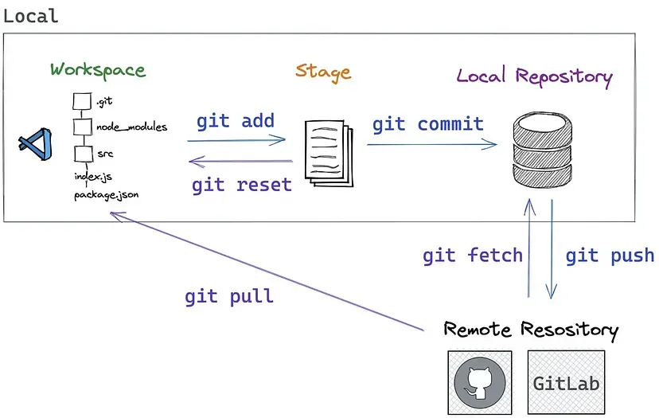
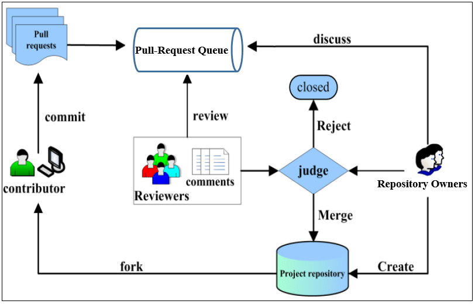

Cours 4 - Travailler avec un dépôt distant

1 Héberger un dépôt distant
GitHub est une plateforme d’hébergement de code pour la gestion de versions et la collaboration. Cette plateforme vous permet de travailler avec d’autres personnes sur des projets depuis n’importe où.
Il y est stocker un large éventail de projets dont notamment des projets open source. Avec des projets open source, vous pouvez partager du code pour créer de meilleurs logiciels plus fiables. Vous pouvez utiliser des dépôts pour collaborer avec d’autres personnes et suivre votre travail. Si vous voulez en savoir plus sur les projets open source, visitez opensource.org, c’est toujours bon pour la culture, mais il n’en sera pas trop question dans ce cours.
Github permet donc tout simplement à ses utilisateurs d’héberger des dépôts Git sur leur plateforme, et ce de manière publique (code disponible pour tous) ou de manière privée (vous pouvez choisir qui aura accès à votre code). Afin d’héberger un dépôt sur Github, il vous faudra bien évidemment avoir un compte Github. Je vous invite donc à en créer ici un si cela n’est pas encore fait.
Vous pourrez toujours vous reférer à la documentation officielle de Github en cas de problème.
2 Création d’un dépôt vide sur Github
Pour créer un dépôt sur Github, vous pouvez suivre les instructions détaillées dans la documentation ici. Suivez les instructions indiquées dans la section Web browser.

Une fois cela fait, vous devriez être en mesure de:
- Créer un dépôt vide sur Github
- Utiliser leur éditeur integré pour apporter des modifications à un fichier
- Effectuer un premier commit sur Github
3 Cloner un dépôt hébergé sur Github
Lorsqu’un dépôt est créé sur GitHub, il est stocké à distance sur la plateforme. Vous pouvez cloner un dépôt pour créer une copie locale sur votre ordinateur, puis utiliser Git pour synchroniser les deux. Dans la section suivante, il sera expliqué comment faire pour synchroniser un dépôt distant et un dépôt local.
Vous pourrez alors travailler localement sur ce dépôt et expérimenter sur votre copie locale: modifications, correction de bugs, ajout de nouvelles fonctionnalités...
La commande git clone <remote_url> permet de cloner un dépôt distant dont l’adresse est <remote_url> et permet d’extraire toutes les données du dépôt distant possède à ce moment-là, y compris toutes les versions de chaque fichier et dossier du projet.
4 Synchroniser un dépôt local avec un dépôt distant hébergé sur Github
Il plusieurs façons de procéder. Après avoir créé un dépôt vide sur Github, la plateforme va nous proposer des actions afin d’y d’ajouter des fichiers.

4.1 En utilisant git clone
git clone <remote_url> 4.2 En ajoutant un dépôt Github en tant que dépôt distant d’un dépôt local
cd <path_to_your_local_repository>
git remote add origin <remote_url>
git branch -M main # renomme la branche principale de votre dépôt local en "main"
git push origin main- Si vous ajouter un dépôt distant à votre dépôt local, il faut vous assurez que votre historique est propre au moment de pousser (
push) sur Github. Il faut absolument que le dépôt distant soit vide au moment du push si vous ne voulez pas gérer des conflits d’historique. - Vous trouverez
<remote_url>sur la page Github du dépôt distant en cliquant sur le boutton<> Code, en choisissant ensuite l’optionHTTPS.

5 Collaborer sur un projet Github
Un des principaux points forts de Git est de faciliter le travail collaboratif. Git permet de récupérer pull des commits d’un dépôt distant, et de pousser push des commits vers celui-ci. Bien sûr il faut que les dépôts soient compatibles, c’est à dire qu’ils correspondent au même historique, il faut avoir au préalable synchronisé le dépôt local au dépôt distant. C’était la commande
git remote add origin <remote_url>qui permettait de synchroniser un dépôt local et un dépôt distant.
Le nom origin est le nom que l’on donne par défaut au dépôt qui joue le rôle de serveur central, mais vous pourriez en choisir un autre.
Le dépôt distant joue alors le rôle de serveur central avec lequel chacun des membres du projet va se synchroniser.
Analysons, un peu de près ce qui est fait par les commandes qui suivent l’ajout du remote de la section précédente:
git remote add origin <remote_url>
git branch -M main # Cette ligne
git push origin mainIci, on renomme la branche principale du dépôt local en main car Git utilise par défaut le nom master tandis que Github lui utilise main comme nom de la branche principale. Il est préférable qu’on ait le même nom pour la branche principale des dépôts local et distant.
git remote add origin <remote_url>
git branch -M main
git push origin main # Cette ligneEnsuite, le remote origin sera celui par défaut et que la branche main sera celle qu’on pousse par défaut sur la branche distante main. En d’autres termes, une fois ce premier push effectué: git push origin poussera par défaut l’historique de la branche locale main sur la branche distante main.
Un dépôt local peut être lié à plusieurs dépôts distants.
5.1 Schéma usuel de pour une collaboration en partant d’un projet vide
On va supposer qu’Alice veuille se lancer dans le développement dans un nouveau projet avec Bob, et eventuellement Charles si celui-ci a du temps. Alice a récemment appris qu’il peuvent utiliser Git et Github pour travailler ensemble de manière propre et efficace. Voici alors le schéma usuel qu’ils vont suivre pour mettre en place leur projet et collaborer avec Git.
- Alice va créer un dépôt sur Github. Qui sera le dépôt distant de leur projet.
- Comme elle a déjà commencé à faire des choses de son côté (elle a évidemment un dépôt local pour son projet), elle va ajouter le dépôt Github comme remote de son projet.
- Alice va ensuite pousser son historique sur le remote.
- Bob et Charles peuvent désormais
clonele dépôt distant pour récupérer chacun une copie du travail qu’Alice a déjà initié.
git clone crée un nouveau dépôt, cette commande doit être réalisée à l’extérieur d’un dépôt Git.
- À ce stade chacun aura exactement la même copie du projet: état, historique, et adresse du remote (qui est ici
origin). - Bob et Charles ont normalement accès en lecture au dépôt Github d’Alice, mais pas en écriture (c’est à dire que pour le moment ils ne peuvent pas encore pousser des nouveaux commits sur le dépôt distant).
- Pour cela ils ont deux solutions:
- Soit Bob et Charles forkent le dépôt d’Alice, c’est à dire qu’ils en créée une copie sur leur compte Github (mais en l’appelant autrement que
originpour pouvoir différencier les deux remotes), et Alice fera de même pour que chacun puisse pousser des commits vers leur copie distante respectives et récupérer des commits depuis les remotes des autre; - Soit Alice ajoute Bob et Charles comme membre du projet sur la Github et leur donne le droit d’écriture sur le dépôt.
- Soit Bob et Charles forkent le dépôt d’Alice, c’est à dire qu’ils en créée une copie sur leur compte Github (mais en l’appelant autrement que
La première approche, même si elle fonctionne, devient vite compliquée quand le nombre de collaborateur du groupe augmente, aussi, on va privilégier la seconde. Dès que vous aurez créé un dépôt vide sur Github, la plateforme va vous proposer d’y ajouter des collaborateur.

Cela peut également se faire via l’onglet Settings du dépôt GitHub si le dépôt existe déjà.

- Alice va donc ajouter Bob et Charles comme collaborateur sur son dépôt Github.
Ça y est tout est mis en place pour que chacun puisse désormais travailler sur une même base commune du projet.
5.2 Issues et Pull request
Github propose également des fonctionnalités qui permettent de faciliter le travail collaboratif. Dans un dépôt Github, il est possible de créer des issues et des pull request.
- Une issue est une fonctionnalité de Github qui permet de créer des tickets pour signaler des bugs, demander des fonctionnalités ou poser des questions. Cela permet de garder une trace de tout ce qui se passe sur le projet et de pouvoir y revenir plus tard si besoin.
- Une pull request est une demande de fusion de code. C’est une fonctionnalité de Github qui permet de faire une revue de code avant de fusionner une branche avec la branche principale du projet. Cela permet de s’assurer que tout est bon avant de fusionner une branche avec la branche principale du projet.
Le petit schéma ci-dessous résume le processus de pull request.

Source: learn github
{kind=link}
5.3 Bonnes pratiques
À partir de là, vous devriez être capables de travailler en même temps sur un projet. Cependant, il y a quelques bonnes pratiques à respecter pour que tout se passe bien.
- Avant de commencer à travailler sur un projet, il faut toujours
pullles dernières modifications du dépôt distant pour être sûr d’avoir la dernière version du projet. Cela évite les conflits et les problèmes de synchronisation. - Il faut toujours travailler sur une branche différente de la branche principale du projet. Cela permet de ne pas modifier le code principal du projet et de pouvoir tester des choses sans risquer de casser le code principal. Cela permet également de pouvoir travailler sur plusieurs fonctionnalités en même temps sans que cela ne pose de problème.
- Une fois que vous avez terminé de travailler sur une fonctionnalité, il faut
pushvotre branche sur le dépôt distant et créer une pull request pour demander à ce que votre code soit intégré au code principal du projet. Cela permet de faire une revue de code et de s’assurer que tout est bon avant de fusionner votre branche avec la branche principale du projet. - Une fois que votre branche a été fusionnée avec la branche principale du projet, il faut supprimer votre branche pour éviter d’avoir trop de branches inutiles sur le dépôt distant.